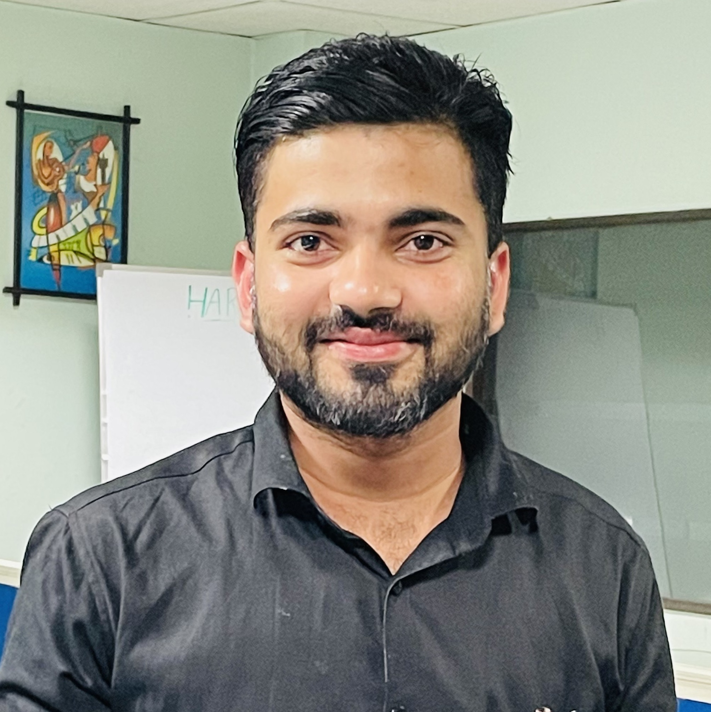

Our Experts
Our team members respect, trust, and care for one another. Our greatest strength is our commitment to the common goal of client satisfaction.
-
Rajan Verma
General Manager
“Rajan is a tech-savvy entrepreneur who blends strategic business analysis with a passion for technology. They set targeted objectives and prioritize ROI while leveraging IT solutions. This holistic approach helps Rajan stay competitive and achieve sustainable business success.”
-

Shiv Ram Rana
Server Administrator
“Shiv Ram is the leader of Oscillate's IT team, responsible for its operations and projects. Additionally, he plays a pivotal role in shaping the company's talent pool and nurturing its organizational culture.”
-
Pardeep Kumar
.Net Team Lead
“Pardeep holds the pivotal role of overseeing Oscillate's extensive engineering division, which is tasked with managing the company's core programming efforts.”
-
Navdeep Kumar
Full Stack Developer
Navdeep possesses fluency in modern frameworks and stays updated with the latest JavaScript versions. He adeptly manages both front-end and back-end development, often collaborating with specialists to maintain consistent functionality across the board.”
-

Kapil Verma
Database Developer
“He has a deep understanding of SQL, NoSQL and has experience working with various database management systems like MySQL, MongoDB, Oracle, and PostgreSQL.”
-

Yash Chawla
Software Developer
“He has a passion for technology and problem-solving, Yash has a strong track record of delivering projects on time, within budget, and exceeding expectations.”